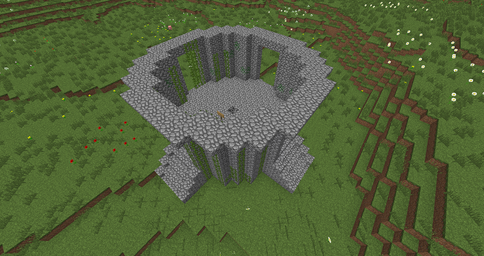

Survival: The Wild
The Wild is a separate world from the Island that is intended to be used for materials collection. Protections cannot be made in the Wild. Do not build here, as the world resets monthly to ensure resources are not depleted.
The Wild can be accessed by stepping through the wooden portal from the Island or by typing /warp wild.
